2020-02-18最強秋山眞緒こんにちは〜お花を愛してる秋山眞緒です！笑約3年間やらせて頂いた「ハナモヨウ」今回で最終回ですぅお花がだいすきなのでちょっぴり悲しいですが、、今までたくさんのお花を写真撮ったり話したり出来てとても幸せでしたそしてもっとお花がすきになりました(^^)ハナモヨウのコーナーが終わっても可愛いお花さんは見つけ続けますよー？お花とっても素敵らぶ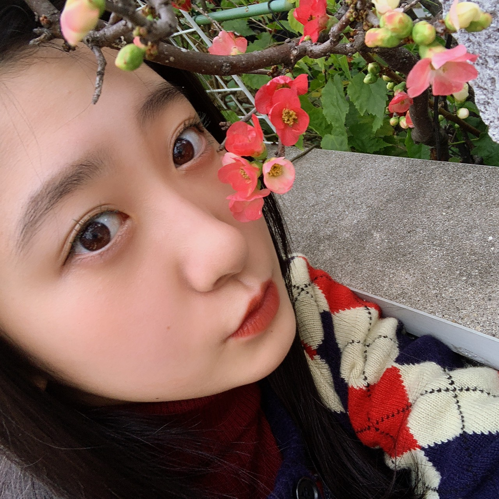新しいコーナーも楽しみにしていてください！！！
2020-02-18ありがとう♪小野田紗栞だんだん暖かくなってきたなあーと思った、さおりです♪この投稿をもって、今までやってきた「ハナモヨウ」は終わっちゃうんですよおおーーー、、、(泣)今まで、色んな種類のお花を載せてきましたねえ！！こんなにも、お花の種類ってあるんだなあーって改めて思いました！！！！お花について、お互いちょっと詳しくなれましたねっ♪ありがとうっ！最後は、さおりとお花で撮った写真です♪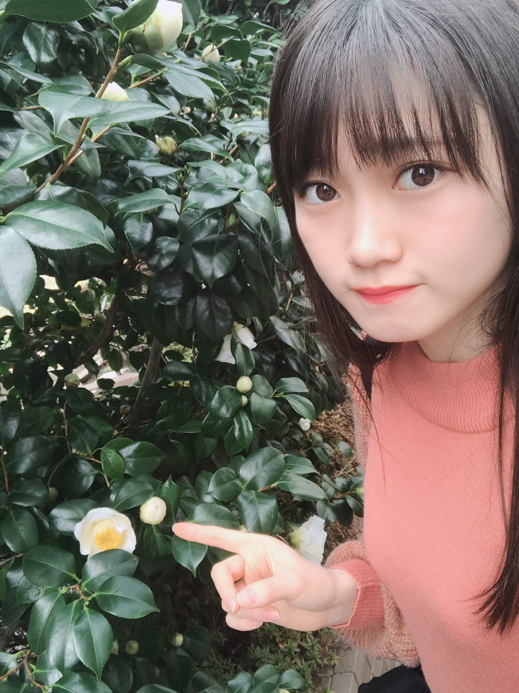バイバイ♡
2020-02-18最後のお花小野瑞歩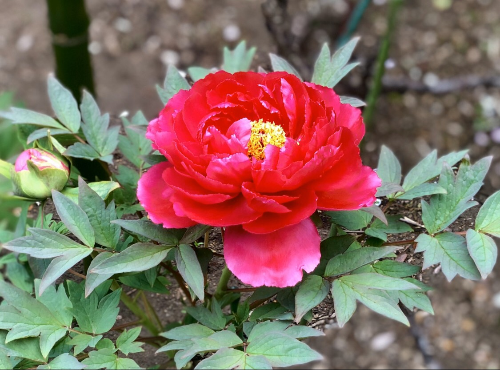最後のお花ハナモヨウのコーナーを通して、たくさんのお花に出会えたこと、嬉しいな〜ハナモヨウは最後でも、これから先もずーっと、お花と一緒に生活していきたいですありがとうハナモヨウ読んでくれたみんなまたね( ´ ▽ ` )ﾉ
2020-02-18最後のお花は？！！谷本安美どうも！！谷本安美です！とうとうお花を撮るハナモヨウが終わってしまいました〜なので今回が最後のお花！！白くて大きなお花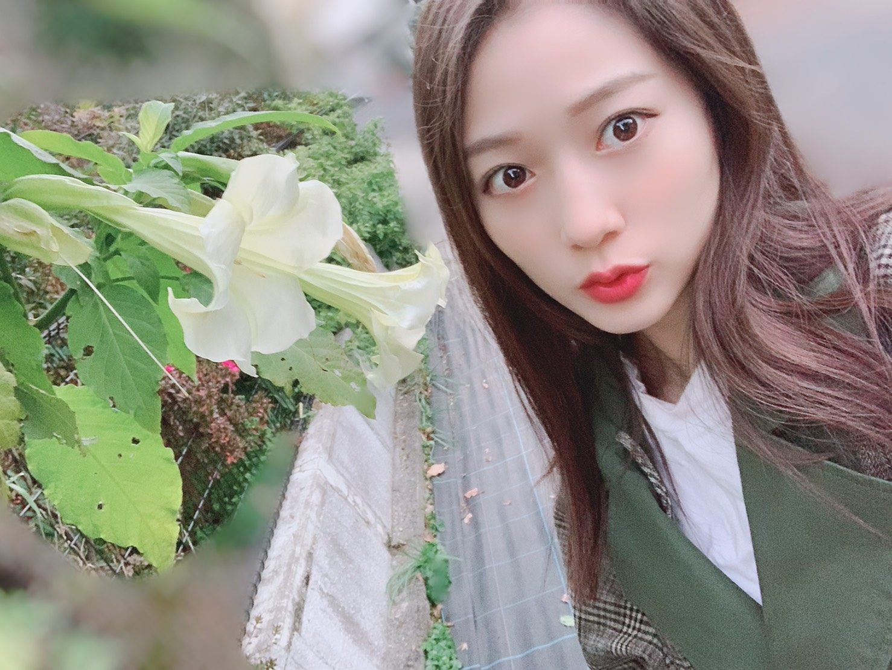この企画のおかげで沢山のお花と写真撮ることができました！！！今まで見てくれてありがとう
2020-02-18梅咲いてた山岸理子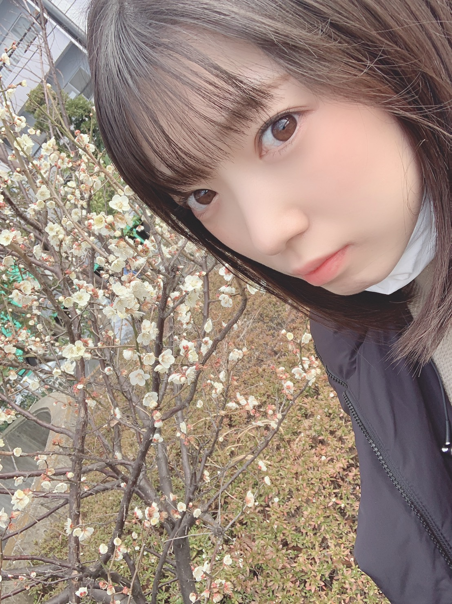今日、歩いてる時にちらっと横を見たら、梅が咲いてました♡春を感じたよ！最近暖かいもんね！梅の花は小さくて白くて可愛いよね！お花は可愛いけど私の顔怖くてごめんなさい笑(ちょっと急いでて。。)この投稿で「ハナモヨウ」ラストになります！でも次のコーナーもあるので引き続き私たちの投稿を楽しみにしていて下さい！！
2020-02-12pink秋山眞緒大きなピンクのお花を見つけました！！綺麗に咲いてて、ついつい撮っちゃいました❤︎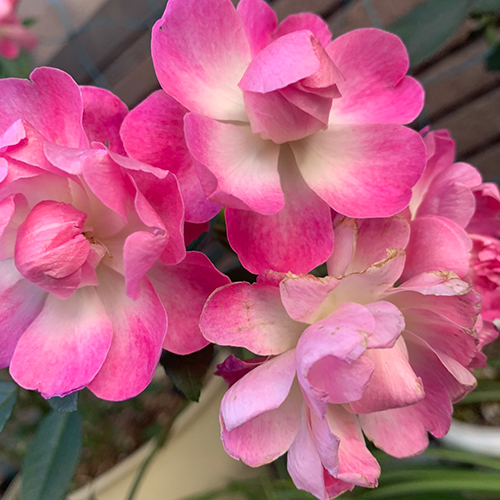色合いもとても素敵。見てて癒されるようなお花ですね(^^)秋山眞緒
2020-02-07赤♪小野田紗栞ひなたぼっこをしたい、さおりです♪ 赤い！お花を見つけました！！！！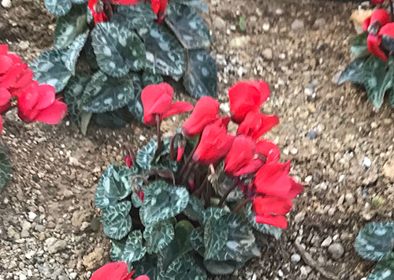かっこいいしかわいい！ みんなも、赤いお花をみつけたら撮ってみては！ バイバイ♡
2020-01-14箱根山岸理子こんにちはー！つばきファクトリーの山岸理子です！この間箱根に行ったときに、道に咲いてたお花です！ポートレート機能を使って撮りました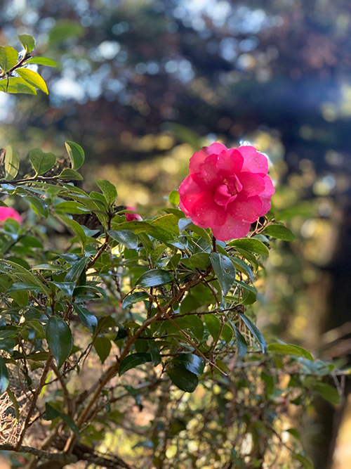このお花たくさん咲いてたよー！可愛かったー！こっち向いて笑ってるみたい！では！またね！
2020-01-10素敵秋山眞緒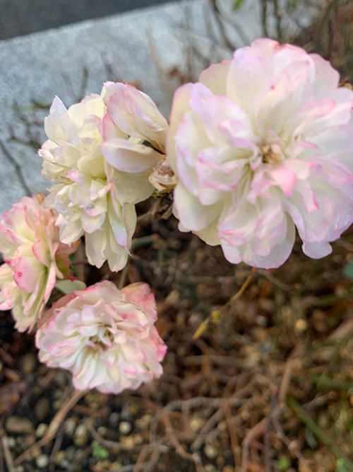このなんとも言えない色。とても素敵でつい写真撮っちゃいました、、、❤白とピンクが混ざったようなお花でとてもかわいいわたしは白と黄色のお花が好きなんですけど、ピンクもかわいいなぁ(^^)お花はとても魅力的。♡秋山眞緒
2020-01-08きれいないろの♪小野田紗栞いい香りがだいすきな、さおりです♪ この間、きれいなピンク色のお花をみつけました！ 周りには、他にも濃いいろのお花とかも咲いていたんだけど、 薄いいろのお花がきれいだったので、写真をとってみました！ この季節だとなんのおはなが咲いているんだろう？ ぜひ、写真にとってみては！！！ バイバイ♡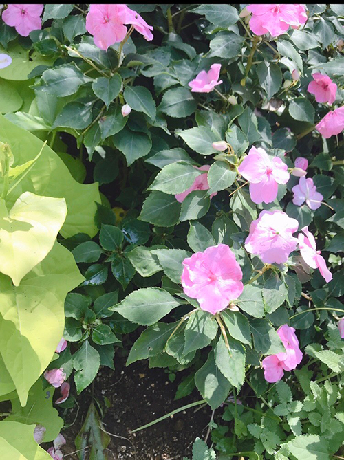
2019-12-10白椿山岸理子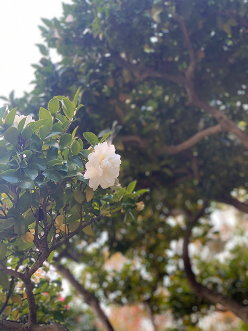こんにちはー！つばきファクトリーの山岸理子です！12月に入り、今年ももうすぐ終わりですね…今日のお花は、名古屋で観光した時に、撮ったお花です♡白いお花が綺麗に咲いてました！これ調べたら「椿」らしいですよ！白もあるんだねぇ！可愛い(><)
2019-12-06red秋山眞緒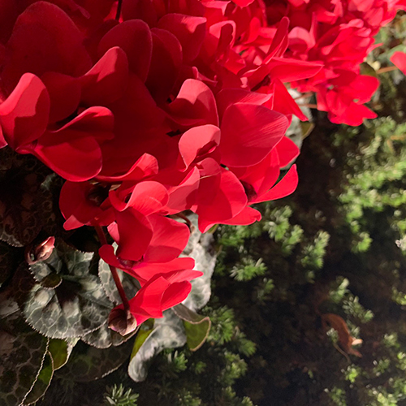クリスマスの時期になると赤いお花をよく見かけます、、♥綺麗で見惚れる！最近はお花をたくさん見つけるので嬉しいなぁまだまだたくさん写真あるので楽しみにしていて下さい(^^)
2019-12-03いろんな♪小野田紗栞寒くなってきて、イルミネーションがきれいだあなーと思ったさおりです♪この間、きれいな景色の中にたくさんのお花が咲いていました！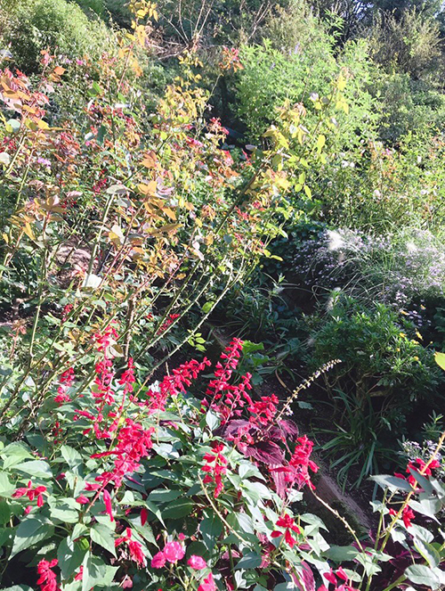写真の下の方には、バラが咲いていたり！お花には、いろんな種類があって、みていてかわいらしいなぁーって思います！！！ぜひ、お花があったら写真を撮ってみては♪バイバイ♡
2019-11-29曼珠沙華小野瑞歩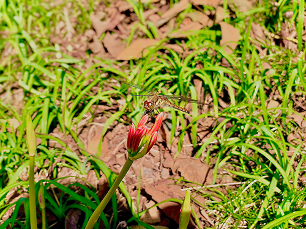咲きかけの曼珠沙華に、とんぼがとまっているのを見つけました！ 脅かさないようにそーっと写真を撮ったよ 半袖で出掛けられた頃が懐かしいくらいに寒くなってきたね、、、。 道にお花が咲いてることも少なくなって、さみしいなって思った！ では( ´ ▽ ` )ノ
2019-11-12白いお花山岸理子お元気ですかー！山岸理子です！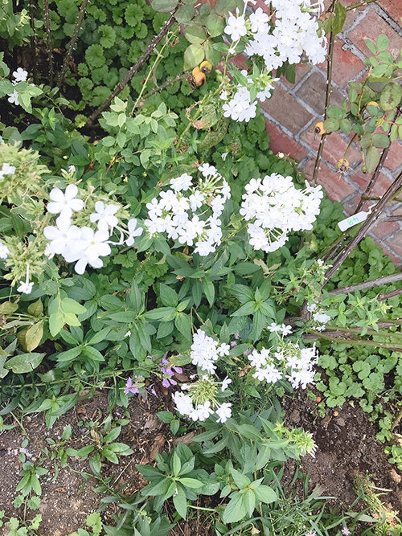白いお花の写真〜！クサキョウチクトウって言うんだよー！かわいいお花だね！みなさんはお花好きですかー？寒くなってきたので寒さ対策しっかりしましょうね！
2019-11-08red秋山眞緒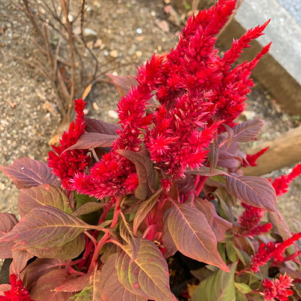綺麗な赤色のお花を見つけました〜どんな色でもお花は綺麗最近は涼しくなってきてましたね、紅葉を見るのがたのしみだぁまた綺麗な紅葉撮れたらお見せしますね
2019-11-05明るさ♪小野田紗栞外が涼しくなってきて嬉しい、さおりです♪この間、黄色いお花をみつけました！！！！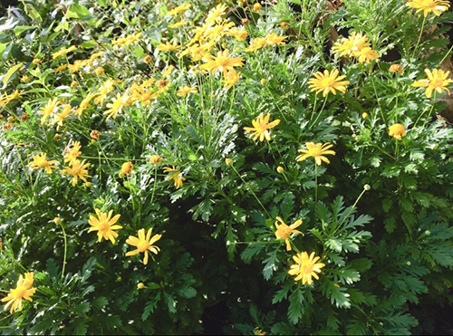少し、色的には夏感がありますねえ。たしかにこれを撮った時はちょっとまだ暑かったかもしれない！笑でも、いつみてもお花はきれいだなあーって思いましたっ。ぜひ、似ているお花があったら撮ってみてはーー！バイバイ♡
2019-10-15お花の名前山岸理子こんにちはー！つばきファクトリーの山岸理子です！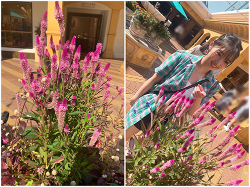ピンクのお花！このお花は「ノゲイトウ」っていうらしいよ！最近、私はお花の名前を検索してくれるアプリをダウンロードして、ハナモヨウに活かせるように、活用しています！♪今日も一日がんばりこりこー
2019-10-11さんぽ秋山眞緒この間空き時間に一人で散歩したんですかわいいお花達をたくさん見つけてテンションが上がりましたね〜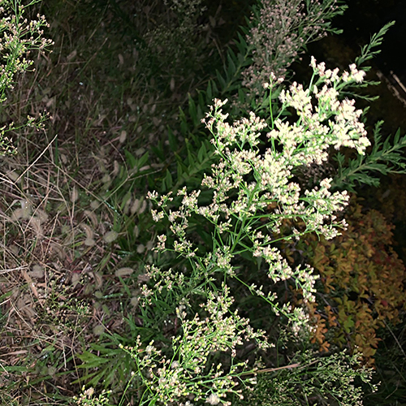写真のお花、とても綺麗で見惚れちゃうなひとりさんぽ。も楽しかったです！
2019-10-08きれいに♪小野田紗栞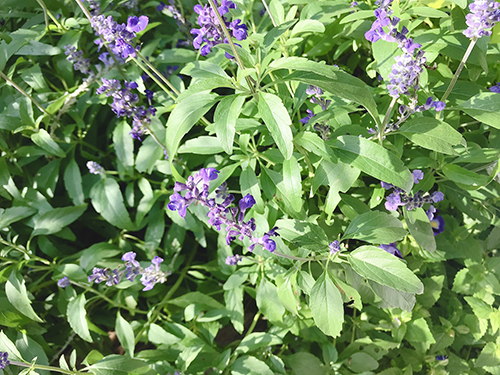10月の気温が好きな、さおりです♪この間、紫色のきれいなおはなをみつけましたー！それでね、写真を撮ってみたら、肉眼でみるのと同じくらいきれいにとることができたんです！！！！この日はとても天気もよくて、おはなが輝いていましたっ。お花のきれいさを共有することができて嬉しい♪バイバイ♡
2019-10-01特別な気持ち小野瑞歩お誕生日のお祝いに、秋山眞緒ちゃんが一輪のお花をプレゼントしてくれました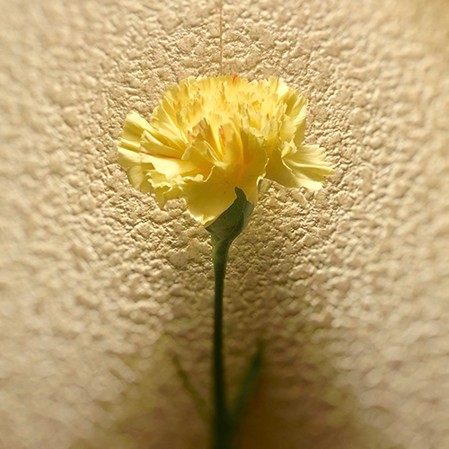まおぴんね、ずーっと可愛い可愛いってお花の写真撮ってて可愛かったお花をプレゼントしてもらうととっても嬉しくなるよねまおぴんありがとうでは( ´ ▽ ` )ノ
2019-09-18白いお花ちゃん山岸理子こんにちはー！つばきファクトリーの山岸理子です！白いお花発見！！！可愛いし綺麗……♡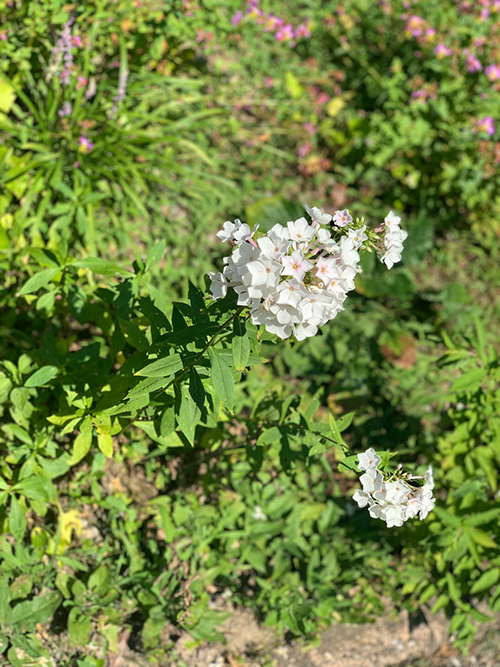お外にいるのに、こーんな綺麗に咲いてる。いいですねぇ素敵です。 みんなもこのお花のように、元気にいこう！！
2019-09-13yellow秋山眞緒こんにちわ秋山眞緒です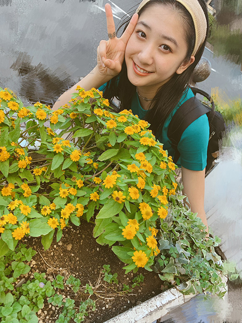黄色の小さなお花達を見つけましたよ〜かわいすぎる、、、、黄色のお花を見ると元気が出ます！たくさん咲いてて嬉しくなりました(^^)
2019-08-20気づいたかな？山岸理子こんにちはー！つばきファクトリーの山岸理子です！ ここ最近、外が暑すぎますね…エアコンのきいた涼しい部屋にいるのがいいですよね～！体調には気をつけないと…！ 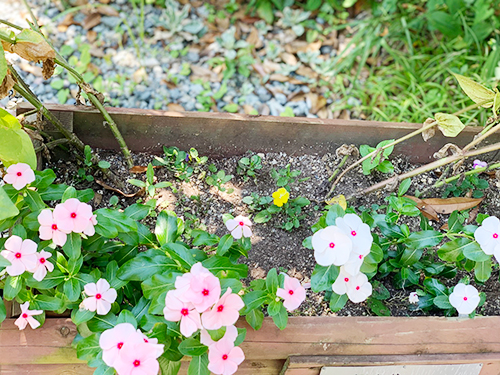今日は、白と薄ピンクの小さいお花！♡見てください！お花の真ん中が、濃いピンクなんです。可愛い！！あと、小さくちょこんと黄色のお花が咲いてるの、気づいたかな？ 気づいたあなた！素敵です！
2019-08-16きらきら秋山眞緒こんにちわ秋山 眞緒です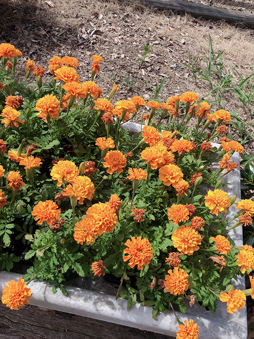 オレンジのお花達がたくさん咲いていましたとてもとてもかわいいい。お花は本当に癒しです 見つけるたびに、可愛いってつい声が出ます(^^)(^^) オレンジのお花さん達、元気に育ってほしいなーー
2019-08-13ぱっと♪小野田紗栞最近、よく夢を見るさおりです♪この間、アイスを食べていたらお花を見つけたので写真を撮ってみました！！！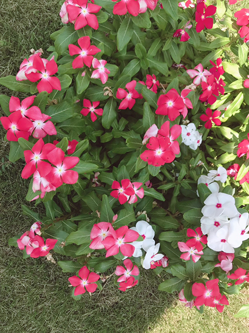外は太陽が眩しいくらいだったのに、お花がすごく綺麗に咲いていて、みていて幸せになりましたっ。お花から元気をもらえるってなんか嬉しいね！！！！バイバイ♡
2019-07-26青空とひまわり山岸理子こんにちはー！つばきファクトリーの山岸理子です！この間、すごくいい天気で青空が広がってました夏っぽいお花は咲いてないかなって周りを見渡したらそこに、ひまわりが咲いてました。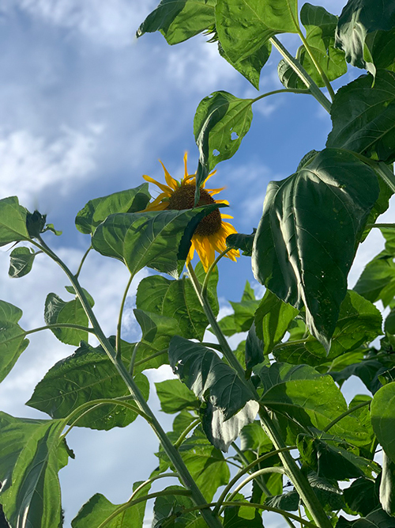青空とひまわり。(+蝉の鳴き声)最高な組み合わせですね◎夏を感じました。
2019-07-22みーつけたっ♪小野田紗栞梅雨ながいなーって思ったさおりです♪ この間、こんなお花を、みつけました！！！！ 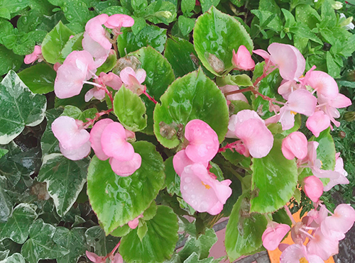雨が降っていて、水滴がついていてすごくきれいでした、、、 お花の写真をとるなら、雨もいいかもしれませんねっ。 なにいろのお花でも、きれい！！！！！ バイバイ❤
2019-06-25あお山岸理子こんにちは！山岸理子です！最近、気温が蒸し暑いですね～夏が始まりそうです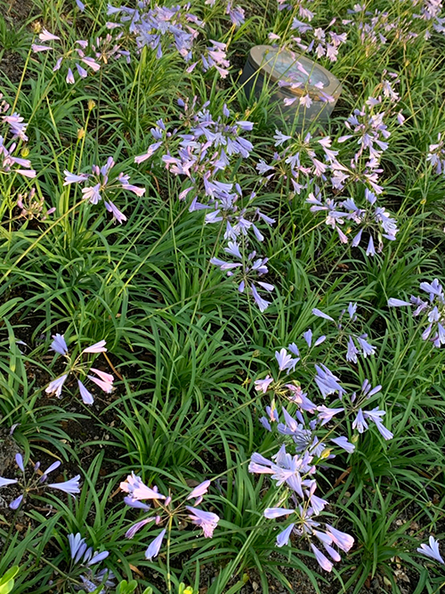夕日の光がかかったお花。綺麗ですね✩.*˚みなさんも綺麗なお花を見つけてみよう！
2019-06-20お花たち秋山眞緒こんにちわ☺秋山 眞緒です夏がやってきましたね〜暑い日が続きますが体調に気をつけて下さいね！そして紫陽花見つけましたよ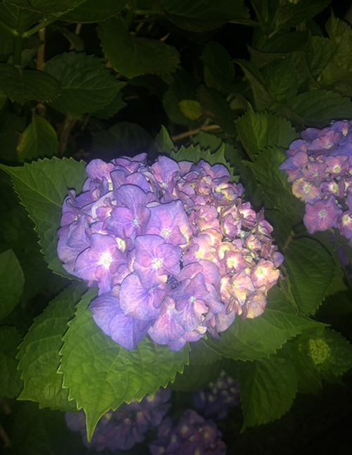紫陽花は、あ花がたくさん集まってる感じがあってかわいい。今年の夏はたくさんのお花を見つけたいな
2019-06-17くっきりはっきり♪小野田紗栞外の空気を思いっきり吸いたい気分な、さおりです♪ この間、すごく目立っているお花を見つけたので写真を撮ってみましたっ。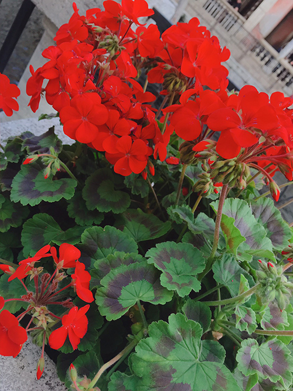 真っ赤だったので歩いていただけで意識してみてなかったのに、 すごく目に入りました！ 早く枯れることなく、立派に咲いていてほしいです♪ バイバイ♡
2019-05-21好きな花秋山眞緒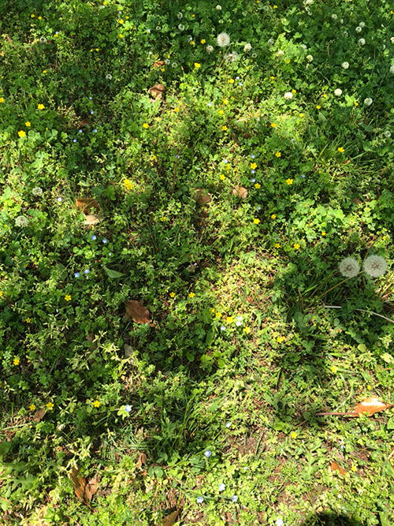前に家族とピクニックに行った時に見つけた小さいお花たち♡あたしは、小さいお花がとてもすきなんです！たくさん咲いてて幸せな気持ちになりました❤
2019-05-17春らしい♪小野田紗栞花粉でお目目がかゆくなった、さおりです♪ それでもお花は綺麗なんです！！！！！ 春らしいお花をみつけたので、写真を撮ってみましたっ。 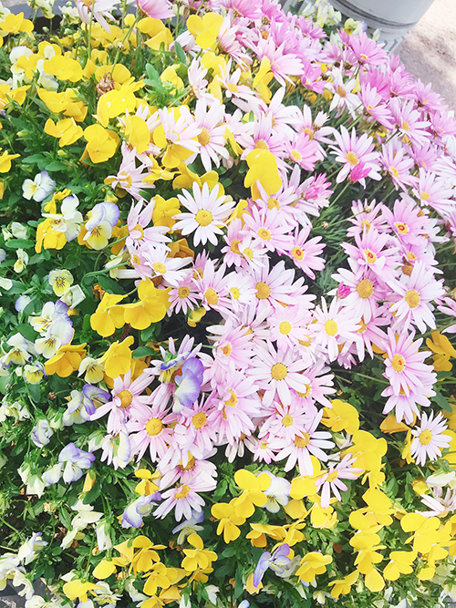どのお花も綺麗でかわいらしい、、、 季節ごとに咲くお花が変わるっていいよね！ バイバイ♡
2019-04-20見つけた秋山眞緒この間、1人でランニングしてたら可愛いお花を見つけました！でも途中で止まりたくなかったので足踏みしながら写真撮りました！！笑色が綺麗でついつい撮りたくなったんです♡今年は、たくさんお花を見つけたいな〜秋山 眞緒
2019-04-18いろ♪小野田紗栞外があたたかくなってきて、嬉しいさおりです♪んちゃ！この間、いろんな色のお花を見つけたんです！！！でもね、その中でもオレンジ色の花がすごく綺麗だったんですっいろんな色のお花があるなかでも、オレンジ色のお花が輝いてみえたので、写真を撮ってみました！バイバイ♡
2019-03-23元気いい子山岸理子こんにちはー！つばきファクトリーの山岸理子です！最近は、春陽気で暖かいですね♩お花もたくさん咲く季節です！私のおうちのお花も元気よく咲いてました！かわいいねぇ！！！花粉症のあなた！(わたしも)花粉には気をつけようね！
2019-03-19びっくり！！ 秋山眞緒ピンクのチューリップを見つけました赤色のイメージが強かったからびっくりしました！！色んな色があるんですねーピンク可愛いな、、、♡ 珍しいお花たくさん見てみたいです★ 秋山 眞緒
2019-03-15いつでも♪小野田紗栞花粉で目がかゆい、さおりです♪ んちゃ！ でーーーーもーーーー 綺麗なお花が咲いていれば、花粉なんて気にならない！！！ この間歩いていたら、紫色のお花を見つけました！ かっこよくて何枚も撮っちゃった！！でもさ、春になってくるとかわいらしい色のお花も咲いてくるんだなぁーって思うと、 春が待ち遠しくなります♪ そーれだけっ。 バイバイ♡
2019-02-192月に咲いてたお花山岸理子こんにちはー！つばきファクトリーの山岸理子です！リリースイベントで京都に行ったときに京都を少し観光しました！！そのときに「清水寺」に行ったのでそこに咲いてたお花です♡このお花いっぱい咲いてて可愛かった！！！！
2019-02-13からふる♪小野田紗栞最近、すぐ眠くなってしまうさおりです♪んちゃ！この間、カラフルなお花をみつけたんです！！！ついつい写真を撮っちゃいました♪この時期に黄色いお花をみると、夏を思い出します、！ってことでーーーお花をみつけたら、写真に撮ってみては♪バイバイ♡
2019-02-09年々。小野瑞歩年々寒がりになっている私は、冬の後に来る春の好きが増しています。最近は暖かい日もあるからね、嬉しいんです春はお花も綺麗だからね！綺麗なお花見られる季節が待ち遠しい…。冬にも綺麗に咲いてた紫のお花！では( ´ ▽ ` )ノ
2019-01-20耐えろ！お花さん！山岸理子こんにちはー！ つばきファクトリーの山岸理子です！ とーーってもさむいですね！でも！こんな時でもお外でたくましく、美しく咲くお花たち。とても素晴らしい。。。私がもしお花だったら、もうむりぃだ～寒い～って枯れちゃうかもしれない、、、 私もこんな素敵なお花のようにたくましく、美しくなりたい。。！このお花から、元気をもらいました♡オレンジのお花さんへ。寒さに耐えて、がんばれ！！
2019-01-16一輪の花♪小野田紗栞天気が良いとテンションが高くなる、さおりです♪ んちゃ！ 今日歩いていたら、こんなお花が咲いていました！！ 他の場所には何個か咲いていたのですが、、 ここには綺麗に咲いているのが一輪だけだったんです！！ 寒い中でも、こんなにお花が綺麗に咲いているなんて♪ って思いました！ このままつぼみになっているお花も咲いてくれると嬉しいな、！ バイバイ♡
2018-12-19寒い中山岸理子こんにちはー！つばきファクトリーの山岸理子です！今日の朝、歩いていたら、寒い中、頑張って咲いている可愛いお花を見つけました！このお花をみて私も今日1日頑張ろうと思いました。みなさんも頑張りましょー！！
2018-12-13クリーム小野田紗栞外の空気を吸うって気持ちいいなーって思った、さおりです♪んちゃ！この間、お花を見つけたので、写真を撮ってみました！！白いお花って、すごく綺麗だなーって思うんです！それもね、ちょっとクリームっぽい感じだったの！！写真だとあまりわからないけど笑純白もいいけど、クリームっぽい色もすき。みんなも、見つけたら写真撮ってみてネ！！！バイバイ♡
2018-11-27初めて！谷本安美秋も終わり冬になりましたね〜いかがお過ごしですか？秋に人生で初めて金木犀を見たんですよ！しかも！めちゃいい香りしてきて金木犀みつけたらにおいをかんでいましたみなさんは金木犀の香り好きですか？
2018-11-13珍しい！！山岸理子つばきファクトリーの山岸理子です！最近どんどん寒くなってきましたね！お散歩してたら、見たこともないお花が咲いてました！ちょっとラズベリーに似てるね！可愛いね！！では、また(^_^)/~~お花みつける旅に出よう～♪
2018-11-07花壇♪小野田紗栞冬が好きなので、寒くなってきて嬉しいさおりです♪んちゃ！今回は色んな色のお花の写真を撮ってみました！１つの花壇に、色んな色のお花があるってすごいなぁーって思ったし、綺麗ですよねーー！！！！さおり的には、オレンジのお花は普段あまりみないので、お気に入りのお花になりました♪でも、どのお花も綺麗だね！！バイバイ♡
2018-10-12綺麗に撮れたお花だよ山岸理子こんにちはー！山岸理子です！最近、街が金木犀の香りがしてウキウキモードです(⌒▽⌒)でも今日は金木犀ではありません！歩いていたら、見つけました♡ピンクのお花！！！！初のポートレートで撮りました！！綺麗に撮れた(^_^)ノ写真撮る時、すごい大きいハチがいて叫びました笑そんなときに撮れた懇親の一枚。
2018-10-04不思議な形♪小野田紗栞よく寝ることって大事だなーって改めて実感した、さおりです♪んちゃ！この間、ピーチ色のお花を見つけました！なんかね、形が面白いんです！！！！さおり、こんな形のお花みたことなかったので、びっくりしちゃいましたっ♪黄色とピーチ色の組み合わせ良き！ぜひ、みつけたら写真撮ってみてねん。バイバイ♡
2018-10-02メンバーカラー！小野瑞歩Hello! SATOYAMA＆SATOUMI Clubの収録をした時に、もうすぐお誕生日ということでサプライズでお花をプレゼントしていただきました！なんとメンバーカラーのお花！だいだいだいすきな色なのですーっごく嬉しかったですでは( ´ ▽ ` )ﾉ
2018-09-03カラフル♪小野田紗栞最近、お昼寝が大好きなさおりです♪んちゃ！この間、カラフルなお花を見つけたので写真を撮ってみました♪色々な色のお花がたくさんあったので、見惚れてしまいましたっ！それもね、他にもたーーーっくさんのお花があったので、夏って明るい色のお花があるから、たくさん写真を撮りたくなってしまいます笑ぜひ、みつけたら写真を撮ってみてネ♪バイバイ♡
2018-08-30もう夏休み小野瑞歩終わってしまいましたか〜？私は、山岸理子ちゃん新沼希空ちゃん谷本安美ちゃんと一緒に、千葉県にお出かけしたんですよ〜。その時に見つけた向日葵とでは( ´ ▽ ` )ﾉ
2018-08-01きらっ♪小野田紗栞暑いからアイスが食べたくなる、さおりです♪んちゃ！今回は黄色いお花の写真を撮ってみました！！！！夏らしくてかわいいっ☆夏といったら、黄色！っていうイメージがあるので、、、笑まだ咲いていない、つぼみもたーーーっくさんあるので、これから、もっと綺麗に咲いていくんだろうなーって思いました！バイバイ♡
2018-06-29かっこよさ♪小野田紗栞暑いので、冷房をつけるようになったさおりです♪んちゃ！今回は、赤いお花を撮ってみました！！赤いお花以外にも、たくさんのお花が咲いていたのですが、赤いお花だから、すぐ目にとまりましたっ♪ピンク色のお花がかわいいなー！って思うけれど、赤色のお花はかっこよくて、素敵だなーって思います！！みつけたら、写真を撮ってみてねっ♪バイバイ♡
2018-05-31かわいい♪小野田紗栞新しい夏服がほしい、さおりです♪んちゃ！この間、すごくかわいらしいお花が咲いていたので写真を撮りました！さおりの大好きないろばかりなんですっ♪あとね、普段はあまり見ないような花びらの形をしていて、びっくりしました！みんなも、見つけたら写真を撮ってみてねーん。バイバイ♡
2018-05-01つぼみ♪小野田紗栞自然の香りが好きな、さおりです♪んちゃ！今回は、白くて綺麗なお花を見つけました！！！！このお花をよーくみてみると、、、つぼみがたくさんあるんです！だから、季節的にもこれからなのかなー？？なんて思いながら、写真を撮りました♪綺麗に、たくさんお花が咲きますようにっ。。バイバイ♡
2018-03-30かわいいお花小野田紗栞花粉でくしゃみが止まらない、さおりです♪んちゃ(*´ω`*)この間お散歩をしていたら、うすぴんくのかわいいお花を見つけましたっ♪かわいいお花を見ると、心もやわらかーくなりますね^ ^みなさんも、かわいいお花をみたら写真に収めてみては！バイバイ♡
2018-03-26さとやま！小野瑞歩先日、山岸理子ちゃん岸本ゆめのちゃん小野田紗栞ちゃんと大阪にある泉佐野丘陵緑地に行ってきました！3月31日、4月1日に行われる「遊ぶ。暮らす。育てる。SATOYAMA&SATOUMIへ行こう2018」に関することをしてきたよ！たっくさんお花咲いてた〜そのなかのひとつ！みんなイベント来てね〜！！では( ´ ▽ ` )ﾉ
2018-02-23綺麗なお花小野田紗栞♪最近、寝起きが悪いさおりです♪もう２月ですね！ 時間が過ぎるのが早い、、、あと2カ月したら、４月になります！４月になったら、桜が綺麗に咲くので早く４月になってほしい(*´꒳`*)でーもー２月には、こんな綺麗なお花が咲いていました♪お花を見ると、心が落ち着きますっ。バイバイ♡
2018-01-19元気に咲いてます。山岸理子こんにちはー！つばきファクトリーの山岸理子です！黄色い小さなお花です( ´ω` )雨降ったあとでも、元気に咲いてました♡可愛い…癒されました(´ー`＊)(∩´∀`∩)ﾊﾞｨﾊﾞｨ
2018-01-15色々な色小野田紗栞長ズボンが暖かくて、長ズボンばかり履いているさおりです♪今日のお花の写真は、カーネーションです！カーネーションは、いつも母の日にママにあげています！写真のカーネーションはピンク色なのですが、他にも色々な色のカーネーションがあって、カーネーションの、色によって花言葉も変わるそうです♪ぜひ、調べてみてね〜〜バイバイ♡
2018-01-09満開！小野瑞歩あけましておめでとうございます！<br><br>2018年初ハナモヨウ。<br><br>新年1発目にふさわしいこの花の写真を撮ってきました〜<br><br><br><br>椿の花です<br><br>2018年、<br><br>椿の花のように綺麗に咲き誇れるように頑張ります！
2017-12-21キレイでしょ～山岸理子こんにちはーつばきファクトリーの山岸理子です！今日は、前に鎌倉行った時に咲いてた赤い小さなお花です♡私は、持ってないけど一眼レフで撮りました！早くカメラ欲しいな笑
2017-12-19綺麗☆秋山眞緒こんにちわ！秋山 眞緒です〜このお花は、歩いてる時にたまたま見つけたお花です！黄色のお花って珍しいなと思い写真を撮ってみました！！黄色の花って見てると元気になる！！あまり見ない色のお花を探してみたいと思いますまーす♫♡
2017-12-14冬♪小野田紗栞クリスマスが好きな、さおりです♪もうすぐで、クリスマスですね！さおりの、クリスマスのカラーのイメージは、、、赤と緑！ということで、赤のお花の写真を撮ってみました♪赤のお花って綺麗だなぁ。バイバイ♡
2017-12-12少し寂しい〜小野瑞歩こんにちは小野瑞歩です最近はとっても寒くなり季節はすっかり冬ですね〜、、、。今日の写真は夏に撮ったピンクのお花です！冬は夏に比べて花がたくさん咲く季節ではないと思うので、ちょっと寂しいです冬の寒さに負けない強い花！見つけて写真を撮りに行きたいと思います！！！
2017-11-17赤いお花山岸理子こんにちはー(^^♪つばきファクトリーの山岸理子です！今日のお花は、赤いお花！一つだけ、ちょこんと咲いててかわいいなと思いました！最近寒くなってきたので寒さ対策をしっかりしましょう！！
2017-11-15みーつけた♡♡♡♡秋山眞緒この間、りこちゃんと遊んだ時に綺麗なお花が咲いてたので写真を撮りました！！紫色のお花ってあまり見た事がなかったので見つけた時嬉しかったです*(*^-ﾟ)-♡色々な色のお花を見つけたいなーー☆
2017-10-16香りが好き♡山岸理子みなさん、こんにちはー(^^)つばきファクトリーの山岸理子です！今日のお花は、私が秋で1番好きなお花、、、「金木犀」です！！！！香りが大好きで、この香りを嗅ぐと秋が来たな～って毎年思います♡
2017-10-12綺麗な色♡秋山眞緒このお花は、きそちゃんと（新沼希空）遊んだ時に咲いているのを見て綺麗だなーって思ってついつい撮ってしまいました♡このお花の色がとても綺麗です！赤とピンクと白☆☆最近は、綺麗なお花を撮るのがスキです♡次、お花を撮るならバラが良いなー
2017-10-10なかなか♪小野田紗栞♪新しい帽子を買ったさおりです♪「サクラソウ」という、お花の写真を撮りました！！！！秋は中々咲いていないそうですが、咲いていました。。「サクラソウ」みたことありますかー？？バイバイ♡
2017-10-05絵本から〜！？小野瑞歩みなさんこんにちは小野瑞歩です！絵本の世界の中から出て来たみたいに色鮮やかなお花を見つけたので写真を撮りました〜なんていう名前なんでしょうか…ピンクと黄色のお花！色合いがすごく可愛いでしょ？？お花の名前にも詳しくなりたいな〜って思いました名前がわかる方がいたら是非教えてくださいね！それでは( ´ ▽ ` )ﾉ
2017-09-19♡ピンクのお花♡山岸理子みなさん、こんにちはー( *˙˙*)つばきファクトリーの山岸理子です！今年もあともう少しで終わりですね～～…はやいっっ最近は、暇があればカラオケへ行き歌の練習をしています♪歌の上達頑張ります( ´ ▽ ` )さて、今日のお花は～～この前、横浜に行った時に撮った写真です♡♡ピンクのお花、可愛い(´ー｀*)秋のお花は、金木犀が好きかな～金木犀の香り大好きーーーーー！！！以上、山岸理子でした！！！
2017-09-14綺麗な写真は好きやー♡秋山眞緒みなさーーん* ( *´ワ｀*)こんにちは♡秋山 眞緒です！！今日の花の写真はー！！！こちらでーーす！↓♡このお花きれいでしょーー！！ついつい綺麗で撮っちゃったー*＼(^o^)／*最近は、綺麗なお花を見ると写真をとっちゃう！！写真のホルダーにお花の写真何枚あるんだろ!!お花大好きです！！^ ^あなたは、お花の写真を撮ったりしますか？？♡^ ^♡眞緒は、あまり撮ったことはなかったのですが最近は良く綺麗な写真を撮りたくなります！！みなさんも是非綺麗な写真を撮ってみて下さい！！
2017-09-12綺麗な色小野田紗栞最近、早寝早起きをするさおりです♪歩いていたら、こんな花が咲いていました↓紫色で、とても綺麗だったので、写真をとりました^ ^みなさんの、好きなお花はなんですか？？バイバイ♡
2017-09-07夢の国にて〜！小野瑞歩みなさんこんにちは小野瑞歩ですハナモヨウ3回目〜！今日のお花は、、、前田こころちゃんと夢の国に行った時に見つけたお花の写真です！一緒に手でお花も作りました〜この日は小さくて可愛いお花をたくさん見つけたよ！また行きたいな〜。それではまた( ´ ▽ ` )ﾉ
2017-08-15かき氷食べたいな～山岸理子こんにちはー( *˙˙*)つばきファクトリーの山岸理子です！最近暑いですねーーー！！この夏になにかしましたー？？もう8月も半ばですよ！早いですよね～～かき氷食べたいな！！！！！では、今日のお花です❀* ❀。. ✿ * ❀ ｡* ❀ ❀ * .❀ ｡ ✿ * ❀ ❀ ｡ ✿ * 。 ° 。 ❀ 。 ° ﾟ ° 。この写真は、江ノ島に行った時に撮った写真です！！お花は、癒させますね～(´ー｀*)明日もがんばりこりこー！でわ'٩(๑˃́ワ˂̀๑)バイバイ( * ́ω`*)ﾉ))
2017-08-10ハナモヨウ〜♬秋山眞緒みなさんこんにちわ* (`∂∀≦´)-♡秋山 眞緒でーす！このお花の写真は。。❤︎なんとー！！ハナモヨウのミュージックビデオ撮影の時にもらったお花です！！たくさんお花をもらったので嬉しかったです* (❁´∀`❁)お花をもらった日にお家で花瓶にお水をいれて育ててました！今は、もう枯れちゃったのですがとってもお花が綺麗で嬉しかったです♡やっぱりお花って綺麗で笑顔になれますよね♡普通に外に咲いているお花を最近探すのですが意外と咲いてないですーー！また、お花を見つけたら写真を撮りたいと思います！！*＼(^o^)／*
2017-08-04アサガオ！？小野田紗栞つばきファクトリーの小野田紗栞です！！！すっごく可愛かったので、撮ってみました♪これは、アサガオなのかなぁ、、、もし、お花に詳しかったら、さおりに、教えて下さいねヽ(´▽｀)／バイバイ♡
2017-08-03まおぴん小野瑞歩こんにちは小野瑞歩です！2度目のハナモヨウ！！！今日は薔薇の写真ですメンバーの秋山眞緒ちゃんの誕生日が最近あったから、真っ赤な写真！薔薇がきれいだな〜と思って写真を撮りました！次の更新も楽しみにしててね！では( ´ ▽ ` )ﾉ
2017-07-19空と花山岸理子こんにちはー(♡´∀`♡)つばきファクトリーの山岸理子です！今日の空、みましたか？青く澄み渡った綺麗な青空に、真っ白な雲がちょこちょこある空。なんか、今日の空を見ると嫌なことも忘れますね～嫌なことないけど！笑今日の空は、"ぼくのなつやすみ"というゲームに出てくる空に似ていて、とても好きです。よく、小さい頃夏になるとそのゲームをやってました！あの昭和な雰囲気大好きなんです♡さて、今日のお花は、こちら。今日も一生懸命、生きてます。これから、お花がたくさんあるであろう所に行ってきます。でわ、今日も１日がんばりこりこ～！
2017-07-13始まりました山岸理子みなさん、こんにちはー！つばきファクトリーの山岸理子です！！つばきファクトリーのハロモバ始まりました～～(・ω・ﾉﾉ゛☆ﾊﾟﾁﾊﾟﾁ私達は、7/26に、2ndシングルをトリプルA面で発売するのですが、その中の「ハナモヨウ」という、曲名に ちなんで、お花を載せていきたいと思います！今日紹介するお花は、私の家で育ててるお花です。♡それでは、みなさん、素敵な1日を(´ u `〃)♡明日もがんばりこりこー！でわ＼(〃´ワ｀〃)バイバイ( * ´ω｀*)ﾉ))
2017-07-13公園で小野田紗栞お部屋の掃除が好きな、つばきファクトリーの小野田紗栞です♪公園で、綺麗なお花を見つけましたよっ。こちらです↓綺麗ですよね！！！！！他にも、たくさんお花がありました^_^最近、暖かくなってきたのでひまわりも咲いていました（＾Ｏ＾☆♪ひまわりの花言葉は、「あこがれ」「あたただけを見つめる」という花言葉だそうです♪皆さんも、お花を見つけたら写真を撮って花言葉を調べてみて下さいねん♡バイバイ♡
2017-07-13バルーンフラワー秋山眞緒みなさんこんにちわ！つばきファクトリーの秋山眞緒です！今日から始まるこのコーナー！始まりましたー！！最近、お花が好きでこの写真はお友達からもらったお花です！！また、綺麗なお花を撮りたいです！待っててくださいね！みなさんも綺麗なお花探してみてください！
2017-07-13お散歩途中小野瑞歩みなさんこんにちは小野瑞歩です今日から始まるこのコーナー！私の一枚目はこの写真です^_^私は写真を乗るのが好きなのですが、散歩途中に見つけたお花を撮りました！道に咲いている綺麗な花を探すのはとっても楽しいですみなさんも探して見てくださいね〜！